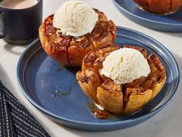

Bloomin' Apples Recipe

Description
This fun and interactive dessert transforms
a Honeycrisp apple into a show-stopping treat.
We brush each apple petal with buttery apple pie sauce,
then bake them until they're perfectly tender and syrupy-sweet.
Add a scoop of vanilla ice cream, and you've got a cozy dessert.
- 4 large (9 ounce) Honeycrisp apples
- 4 tablespoons unsalted butter, melted
- 3 tablespoons light brown sugar
- 1 1/2 teaspoons apple pie spice blend
- 8 medium soft caramel squares, such as Werther's
- vanilla ice cream
- caramel sauce
- Gather all ingredients and preheat oven
to 375 degrees F.
- Slice off the top 1/2-inch of each apple. Using an apple corer,
a melon baller, or a teaspoon, remove core,
starting at the top of each apple
and stopping about 1 inch from the bottom of the apple.
- Using a paring knife or a round cookie cutter, cut
2 concentric circles 1/4-inch apart outward from core,
cutting as deep as possible without cutting all the way
through bottom of apple.
- Working from the top of the apple, cut vertically
into 8 equal slices, leaving apple intact 1/2 inch from
bottom.
- In a small bowl, whisk together butter, brown sugar,
and apple pie spice until well combined. Set aside.
- Place apples in an 8-inch square baking dish.
Fill each apple with two caramel squares. Brush butter
mixture evenly over the tops of each apple. Pour boiling
apple around the apples to a depth of 1/4-inch in the bottom
of the dish. Cover with foil.
- Bake in the preheated oven for 30 minutes.
Remove foil and continue to bake, uncovered, until sugar
begins to caramelize and apples are tender when pierced
with a paring knife, 25 to 30 minutes.
- Allow apples to cool for 10 minutes. Using your hands,
gently spread apple "petals" apart. Serve warm or at room
temperature topped with a scoop of vanilla ice cream
and a drizzle of caramel sauce.